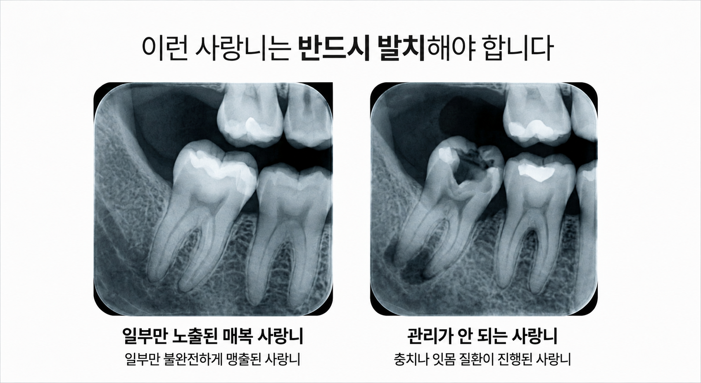
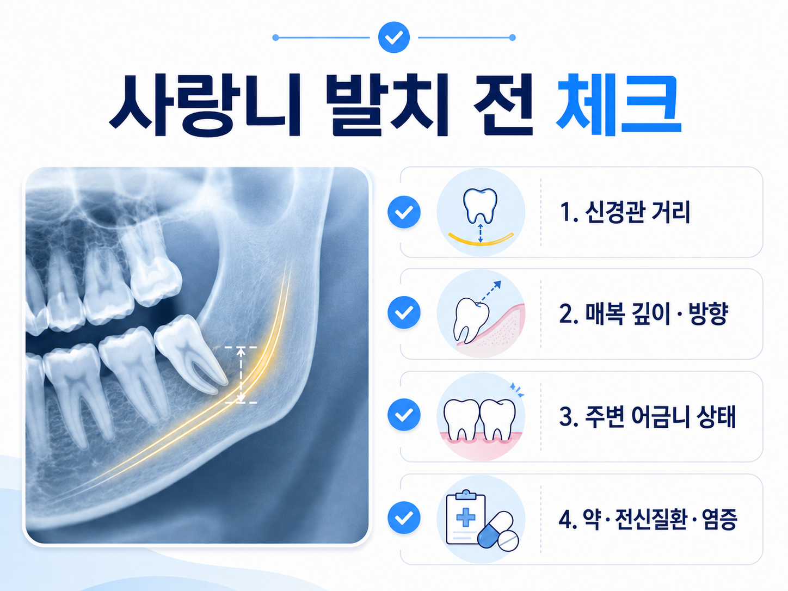
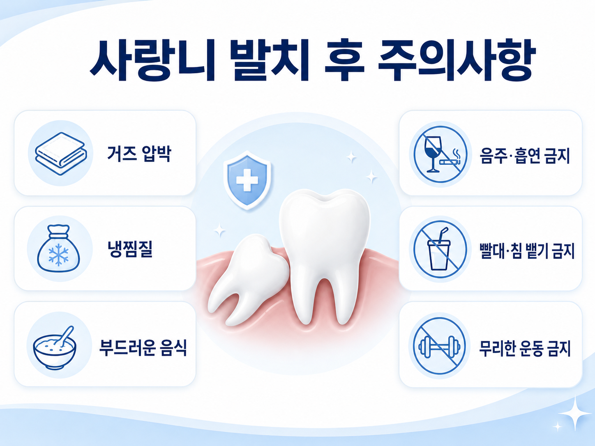

YONSEI LAKE DENTAL CLINIC
사랑니는 위치와 각도, 신경관과의 거리, 염증 여부에 따라 치료 계획이 달라집니다. 연세레이크치과는 3D CT 진단을 바탕으로 환자분의 상태에 맞는 발치 여부와 시기를 안내합니다.

사랑니의 방향, 매복 정도, 주변 치아와의 관계를 확인한 뒤 발치 여부를 결정합니다.
모든 사랑니를 무조건 발치해야 하는 것은 아닙니다.
사랑니가 바르게 맹출되어 관리가 잘 되고 염증이 없다면 경과 관찰을 할 수 있습니다. 하지만 사랑니가 비스듬히 누워 있거나, 일부만 잇몸 밖으로 나와 반복적으로 붓고 아프거나, 앞 어금니에 충치·잇몸 문제를 만드는 경우에는 발치를 고려할 수 있습니다.
앞 어금니를 밀거나 치아 사이에 음식물이 끼어 충치와 잇몸 염증을 만들 수 있습니다.
잇몸 틈 사이로 세균이 들어가 붓기, 통증, 냄새가 반복될 수 있습니다.
뒤쪽 깊은 곳에 위치해 관리가 어려우면 충치나 잇몸질환 위험이 높아질 수 있습니다.
사랑니 주변이 자주 붓거나 씹을 때 불편하다면 검진을 통해 원인을 확인하는 것이 좋습니다.

사랑니 발치 전에는 뿌리 형태, 신경관 위치, 염증 범위를 함께 확인해야 합니다.
특히 아래턱 사랑니는 감각을 담당하는 신경관과 가까운 경우가 있어, 일반 X-ray만으로 판단하기 어려운 경우가 있습니다. 필요 시 3D CT를 통해 사랑니 뿌리와 신경관의 관계를 입체적으로 확인한 후, 발치 방법과 주의사항을 안내합니다.
구강 검진과 X-ray, 필요 시 3D CT 촬영을 통해 사랑니 위치와 발치 난이도를 확인합니다.
마취 후 진행하며, 매복 정도에 따라 잇몸 절개 또는 치아 분할이 필요할 수 있음을 미리 설명합니다.
주변 조직 손상을 줄일 수 있도록 발치 방향과 힘을 조절하며, 환자 상태에 맞춰 신중하게 진행합니다.
발치 후 지혈 상태를 확인하고, 붓기·통증 관리와 식사·양치 주의사항을 자세히 안내합니다.
사랑니 발치 후에는 지혈과 감염 예방, 회복 관리를 잘 지키는 것이 중요합니다. 아래 사항은 일반적인 안내이며, 실제 주의사항은 발치 난이도와 환자분의 상태에 따라 달라질 수 있습니다.

사랑니의 위치와 신경관 관계를 입체적으로 확인해 환자 상태에 맞는 발치 계획을 세웁니다.

발치 후 주의사항과 회복 과정에서 확인해야 할 부분을 이해하기 쉽게 안내합니다.
염증이 반복되거나 통증이 있는 사랑니는 먼저 검진을 통해 상태를 확인하는 것이 좋습니다. 전화로 문의하시면 방문 상담을 안내해 드립니다.
031-378-7522 전화 상담통증이 있거나 잇몸이 반복적으로 붓는다면 사랑니의 위치와 주변 치아 상태를 먼저 확인해 보세요.
필요 시 3D CT로 신경관과 사랑니 뿌리의 위치를 확인합니다.
매복 정도, 염증 여부, 복용약 등을 고려해 발치 방법을 안내합니다.
지혈, 통증 관리, 식사 및 양치 주의사항을 꼼꼼하게 설명합니다.